Redesign: App de Plantas Medicinais
Minha Função
UI/UX Designer
Ferramentas
Figma, Quant-UX, Trello
Duração
6 meses (TCC)
O Desafio
A usabilidade e a descoberta de conteúdo eram restritas pela interface conversacional do bot inicial. É crucial garantir o acesso a informações confiáveis sobre plantas medicinais no Brasil, dada a alta taxa de uso popular (cerca de 82%) e os perigos associados à desinformação.
Sobre o Projeto
Este projeto consiste no redesign de um bot informativo do Telegram sobre plantas medicinais, transformando-o em um protótipo de aplicativo móvel chamado Plantas Medicinais Br.
O objetivo foi desenvolver uma ferramenta intuitiva e confiável que atua como um aplicativo educacional para compilar e tornar acessíveis dados sobre plantas medicinais validados pela ANVISA e por artigos científicos.
1. Contexto e Problema
A base do projeto foi o chatbot "Plantas Medicinais BR" no Telegram. Apesar do valor dos dados científicos, a análise heurística revelou que o formato de chat era inadequado, com falhas como:
- Usuários se perdiam na navegação linear do chat;
- Não havia retorno visual ou menu intuitivo;
- Termos técnicos dificultavam o entendimento;
- O acesso era restrito ao uso exclusivo do Telegram.
Interface original (Bot):
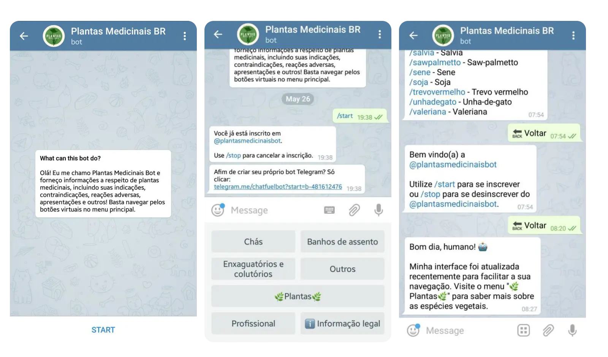Metas do Projeto
Transformar a base de dados em interface visualmente organizada.
Garantir confiabilidade combatendo a desinformação.
Atender necessidades de leigos e profissionais.
2. Entendendo os Usuários
Durante os testes foram identificados três públicos principais: Profissionais da saúde, Usuários de plantas e Curiosos. A partir disso, foram criados 3 perfis detalhados:
3. Análise de Similares
Foram investigados 3 apps da Play Store e identificados problemas recorrentes:
Problemas Encontrados
- Excesso de anúncios intrusivos
- Navegação confusa
- Falta de fontes confiáveis
- Informações perigosas à saúde
4. Pesquisa e Validação (Protótipo de Papel)
A fase exploratória validou conceitos através de Card Sorting e Prototipagem em papel. O teste de usabilidade demonstrou uma melhoria significativa:
Card Sorting:

Arquitetura da Informação:
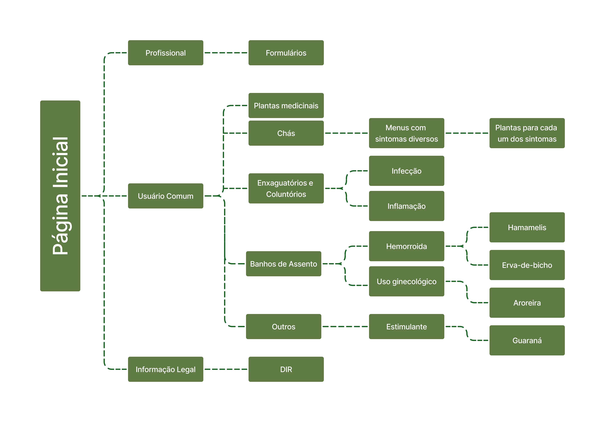5. Design e Prototipagem
Foi desenvolvido um design system minimalista inspirado no Google Material Design, utilizando tons de verde, tipografia Roboto e ilustrações de plantas.
 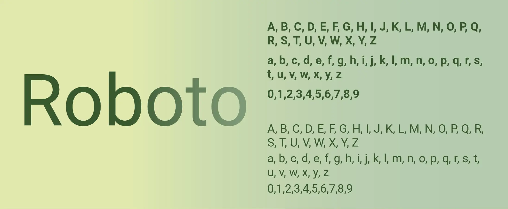
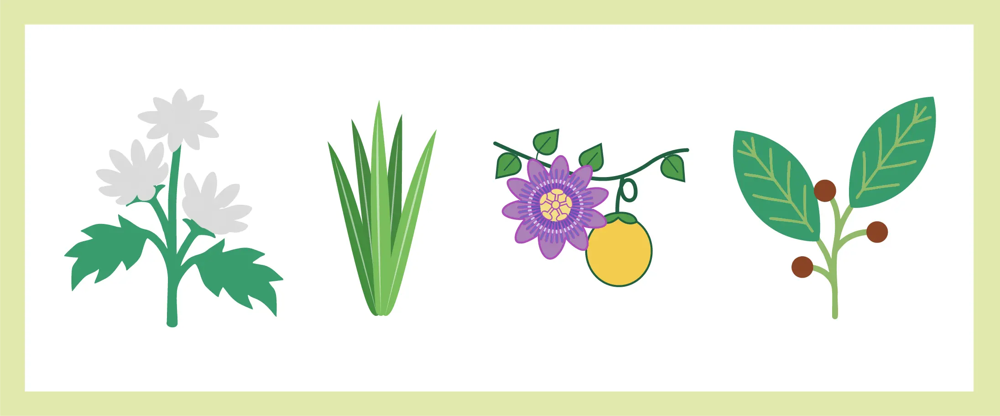
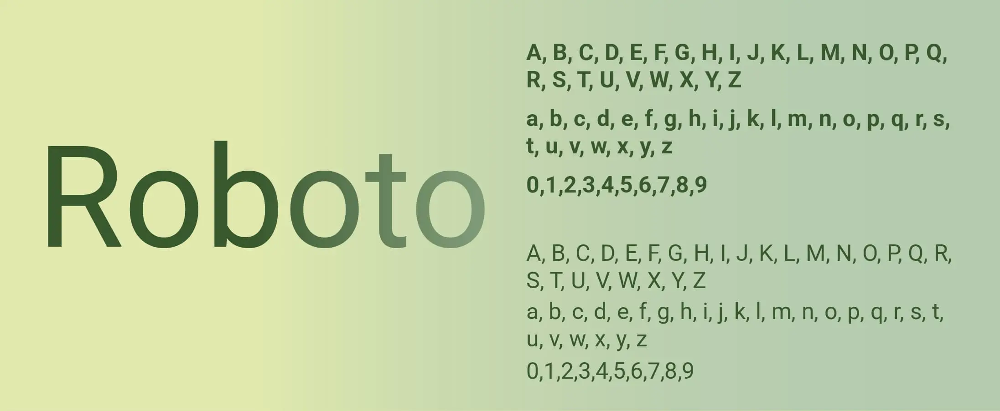
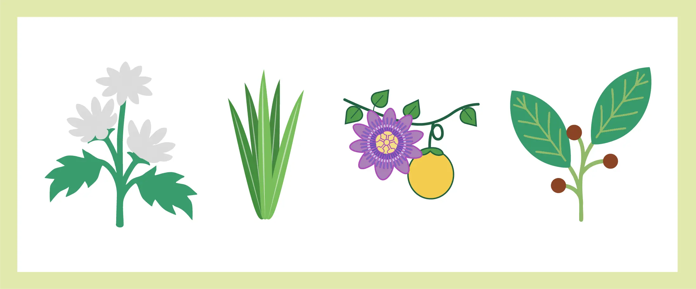
6. A Solução: Protótipo de Alta Fidelidade
O resultado foi um protótipo navegável com perfis adaptados, busca eficiente e linguagem acolhedora.
 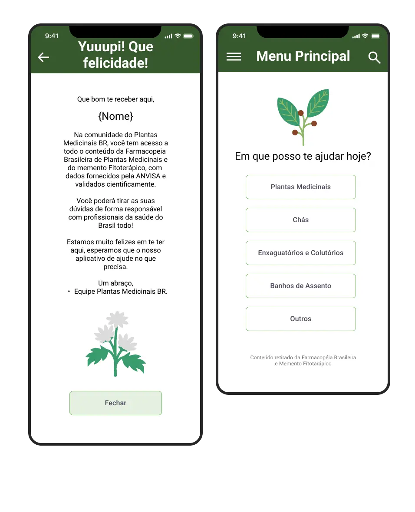
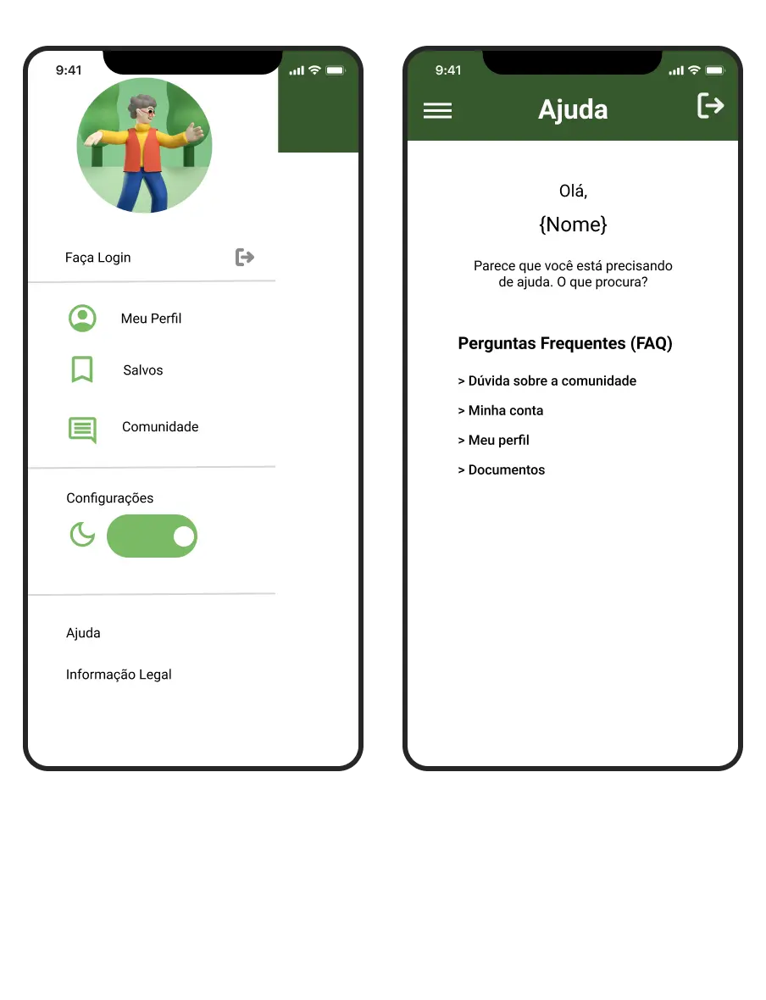
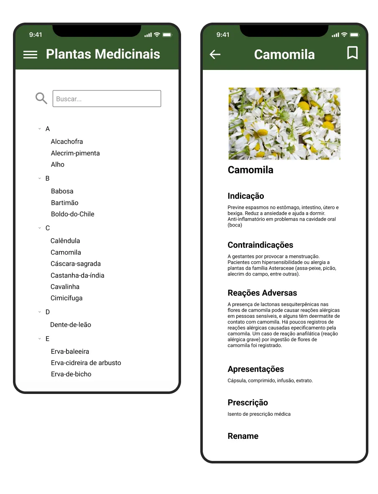
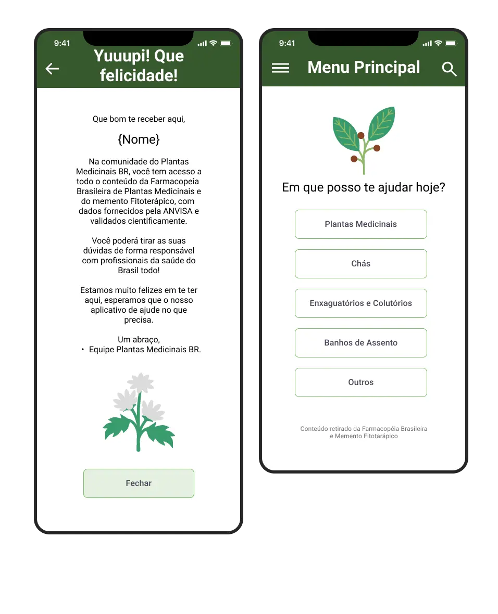
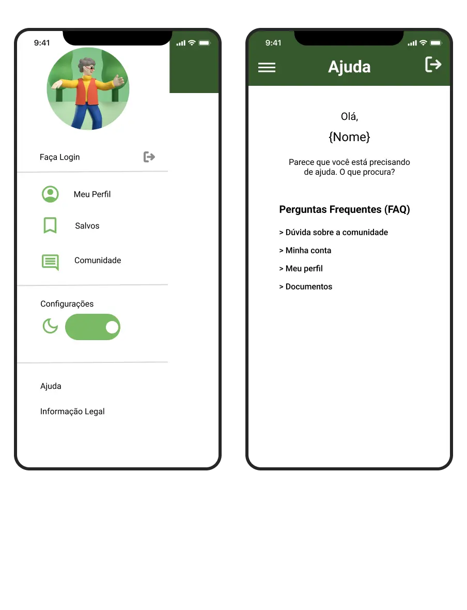
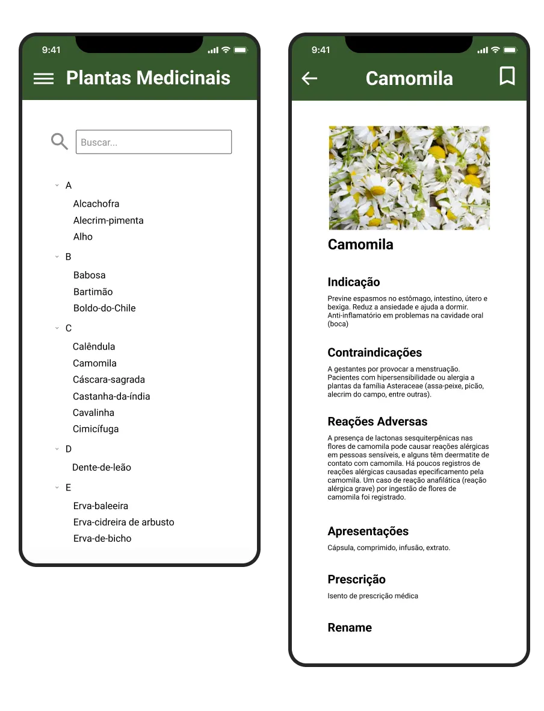
7. Validação com Usuários Reais
Testes remotos via Quant-UX com tarefas guiadas confirmaram a alta usabilidade.
SUS Score (Excelente!)
Feedback Qualitativo: As palavras mais usadas foram "simples", "fácil", "intuitiva" e "útil". Os mapas de calor revelaram grande interesse na função "Salvar", validando a necessidade de favoritos.